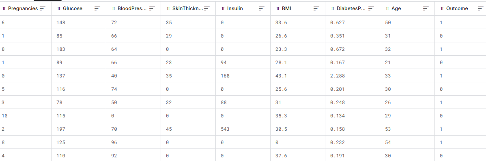
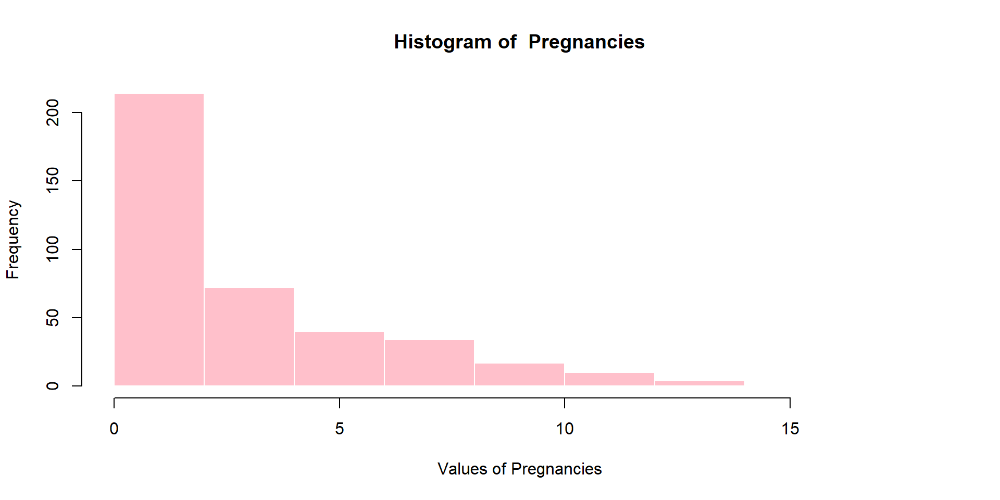
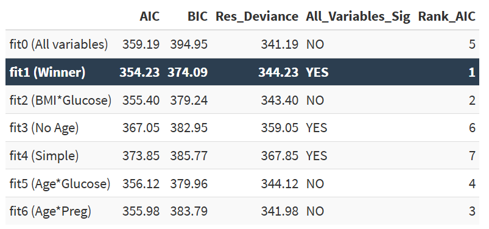
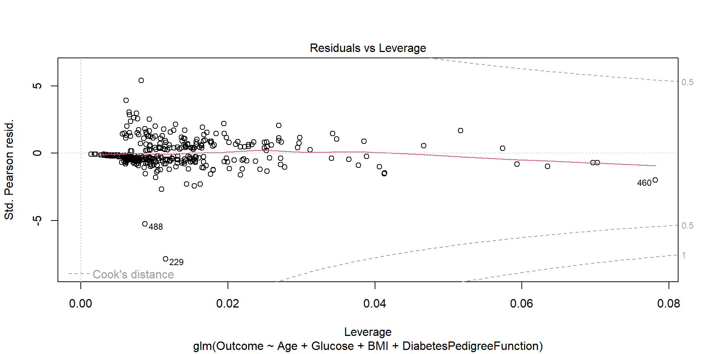
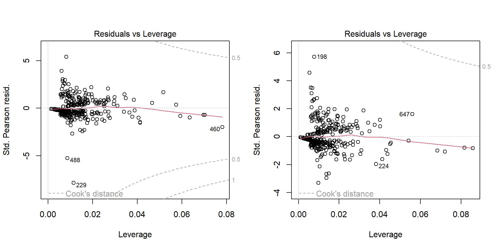

# Recoding BMI to classes
dataRDS$BMI[dataRDS$BMI <= 18.5 ] <- 1 # Underweight
dataRDS$BMI[dataRDS$BMI > 18.5 & dataRDS$BMI <= 25 ] <- 2 # Healthy
dataRDS$BMI[dataRDS$BMI > 25 & dataRDS$BMI <= 30 ] <- 3 # Overweight
dataRDS$BMI[dataRDS$BMI > 30] <- 4 # Obese
# Removing missing values
dataRDS <- subset(dataRDS,
BloodPressure != 0 &
SkinThickness != 0 &
Glucose != 0 &
Insulin != 0 &
BMI != 0)Predicting Diabetes
Demi van den Biggelaar (9660089)
August Gesthuizen (5292565)
Friso Harff (7526946)
Leander van der Waal (7180063)
2026-01-15
Inhoudsopgave
- Research Question
- The Data
- Models
- The Best Model
- Assumptions
- Conclusion model
- Answer Research Question
Introduction Research Question
Diabetes
Common
Diagnosis
The Research Question
Can we predict if someone is diabetic using research data with a logistic regression using Age, Glucose, BMI en DiabetesPedigreeFunction?
The Dataset
National Institute of Diabetes and Digestive and Kidney Diseases (1990)
Exploring the data
Pregnancies: Number of times pregnant
Glucose: Plasma glucose concentration a 2 hours in an oral glucose tolerance test
BloodPressure: Diastolic blood pressure (mm Hg)
SkinThickness: Triceps skin fold thickness (mm)
Insulin: 2-Hour serum insulin (mu U/ml)
BMI: Body mass index (weight in kg/(height in m)^2)
DiabetesPedigreeFunction: a function that scores the probability of diabetes based on family history, with a realistic range of 0.08 to 2.42
Age: Age (years)
Outcome: Class variable (0 or 1)
Preprocessing
Interesting Finds
259/393 = 66% are obese
Model comparison
Model summary’s - Fit 6
Call:
glm(formula = Outcome ~ Glucose + BMI + DiabetesPedigreeFunction +
Age * Pregnancies, family = binomial, data = dataRDS)
Coefficients:
Estimate Std. Error z value Pr(>|z|)
(Intercept) -11.338734 1.384261 -8.191 2.59e-16 ***
Glucose 0.035578 0.005019 7.088 1.36e-12 ***
BMI 0.989748 0.261120 3.790 0.00015 ***
DiabetesPedigreeFunction 1.182371 0.416548 2.838 0.00453 **
Age 0.050940 0.027112 1.879 0.06027 .
Pregnancies 0.197751 0.170070 1.163 0.24492
Age:Pregnancies -0.003446 0.004322 -0.797 0.42525
---
Signif. codes: 0 '***' 0.001 '**' 0.01 '*' 0.05 '.' 0.1 ' ' 1
(Dispersion parameter for binomial family taken to be 1)
Null deviance: 498.90 on 392 degrees of freedom
Residual deviance: 341.98 on 386 degrees of freedom
AIC: 355.98
Number of Fisher Scoring iterations: 5Fit 2
Call:
glm(formula = Outcome ~ Age + Glucose + BMI + DiabetesPedigreeFunction +
Glucose * BMI, family = binomial, data = dataRDS)
Coefficients:
Estimate Std. Error z value Pr(>|z|)
(Intercept) -16.05571 5.85345 -2.743 0.006089 **
Age 0.04952 0.01347 3.676 0.000237 ***
Glucose 0.07421 0.04408 1.684 0.092266 .
BMI 2.30316 1.51490 1.520 0.128426
DiabetesPedigreeFunction 1.16460 0.41642 2.797 0.005163 **
Glucose:BMI -0.01013 0.01144 -0.885 0.376090
---
Signif. codes: 0 '***' 0.001 '**' 0.01 '*' 0.05 '.' 0.1 ' ' 1
(Dispersion parameter for binomial family taken to be 1)
Null deviance: 498.9 on 392 degrees of freedom
Residual deviance: 343.4 on 387 degrees of freedom
AIC: 355.4
Number of Fisher Scoring iterations: 6Fit 1
Call:
glm(formula = Outcome ~ Age + Glucose + BMI + DiabetesPedigreeFunction,
family = binomial, data = dataRDS)
Coefficients:
Estimate Std. Error z value Pr(>|z|)
(Intercept) -11.102813 1.279984 -8.674 < 2e-16 ***
Age 0.050595 0.013463 3.758 0.000171 ***
Glucose 0.035632 0.005019 7.099 1.26e-12 ***
BMI 0.998930 0.258862 3.859 0.000114 ***
DiabetesPedigreeFunction 1.129221 0.413553 2.731 0.006323 **
---
Signif. codes: 0 '***' 0.001 '**' 0.01 '*' 0.05 '.' 0.1 ' ' 1
(Dispersion parameter for binomial family taken to be 1)
Null deviance: 498.90 on 392 degrees of freedom
Residual deviance: 344.23 on 388 degrees of freedom
AIC: 354.23
Number of Fisher Scoring iterations: 5Best model fit
- comparison with ggpairsplot
- Interpretation
Binary dependent variable
- Diabetes (coded 1)
- Not diabetes (coded 0)
Sufficiently large sample size
- 10 cases per candidate predictor : \(N=\frac{10k}{p}\)
Outcome n prop
1 0 263 0.6692112
2 1 130 0.3307888k=4, p=0.33 -> 121 required
130 positive
Full-rank predictor matrix
More observations than predictors
No multicollinearity among linear predictors
Age Glucose BMI
1.022157 1.018869 1.009314
DiabetesPedigreeFunction
1.006276 - VIF=1 : no correlation
Continuous predictors are linearly related to the \(logit(\pi)\)
- Continuous predictors :
Age, Glucose and DiabetesPedigreeFunction
Continuous predictors are linearly related to the \(logit(\pi)\)
- Continuous predictors : Age,
Glucoseand DiabetesPedigreeFunction
Continuous predictors are linearly related to the \(logit(\pi)\)
- Continuous predictors : Age, Glucose and
DiabetesPedigreeFunction
No influential values or outliers
No values outside Cook’s distance
Maybe influential observations?
Most influential observations
Glucose Age BMI DiabetesPedigreeFunction
229 197 31 4 2.329
460 134 81 3 0.460
488 173 58 4 1.159Removing most influential observations
Model Null_Deviance Residual_Deviance AIC
1 fit1 498.902 344.225 354.23
2 fit1.2 496.481 323.971 333.97Updated model
Coefficients
Estimate Std. Error z value Pr(>|z|)
(Intercept) -11.10281260 1.279983660 -8.674183 4.165298e-18
Age 0.05059467 0.013462839 3.758098 1.712097e-04
Glucose 0.03563232 0.005019401 7.098919 1.257362e-12
BMI 0.99893046 0.258861962 3.858931 1.138841e-04
DiabetesPedigreeFunction 1.12922062 0.413552881 2.730535 6.323161e-03- The expected log-odds of diabetes for a zero-year-old with no glucose levels, BMI, or DiabetesPedigreeFunction are -11.103.
- An individual’s age significantly predicts their probability of diabetes, after controlling for glucose, BMI, and DiabetesPedigreeFunction (𝛽 = .051, z = 3.758, p < .000).
- For each additional year of age, the expected log-odds of having diabetes increases with .051 units.
- An individual’s glucose levels significantly predicts their probability of diabetes, after controlling for age, BMI, and DiabetesPedigreeFunction (𝛽 = .036, z = 7.099, p < 1.26e-12).
- For each additional level of glucose, the expected log-odds of having diabetes increases with .036 units.
- An individual’s BMI significantly predicts their probability of diabetes, after controlling for age, glucose, and DiabetesPedigreeFunction (𝛽 = .999, z = 3.859, p < .000).
- For each additional level of BMI, the expected log-odds of having diabetes increases with .999 units.
- An individual’s DiabetesPedigreeFunction significantly predicts their probability of diabetes, after controlling for age, glucose, and BMI (𝛽 = 1.129, z = 2.731, p < .006).
- For each additional DiabetesPedigreeFunction, the expected log-odds of having diabetes increases with 1.129 units.
Odds ratios
(Intercept) Age Glucose
1.506988e-05 1.051896e+00 1.036275e+00
BMI DiabetesPedigreeFunction
2.715376e+00 3.093245e+00 The expected odds ratio for age are 1.052, or a 5,2% increase in the odds of having diabetes for every increasing value of age.
The expected odds ratio for glucose are 1.036 or a 3.6% increase in the odds of having diabetes for every increasing value of glucose.
The expected odds ratio for BMI are 2.715 or a 171,5% increase in the odds of having diabetes for every increasing value of BMI.
The expected odds ratio for DiabetesPedigreeFunction are 3.093 or a 209.3% increase in the odds of having diabetes for every increasing value of diabetes pedigree function.
Confusion Matrix
Reference
Prediction 0 1
0 234 54
1 29 76- A total of 393 individuals
- 263 negative; no diabetes
- 130 positive; diabetes
- 234 of those 263 were correctly estimated to not have diabetes
Concludeer en beantwoord
True Positive
[1] 76True Negative
[1] 234False Positive
[1] 29False Negative
[1] 54Accuracy
[1] 78.88041Error rate
[1] 21.11959Sensitivity
[1] 58.46154Positive Predictive Value
[1] 72.38095False Positive Rate
[1] 11.02662Negative predictive value
[1] 81.25ROC
Area under the curve: 0.8618
Concludeer en beantwoord - Demi
When you click the Render button a presentation will be generated that includes both content and the output of embedded code. You can embed code like this:
[1] 2